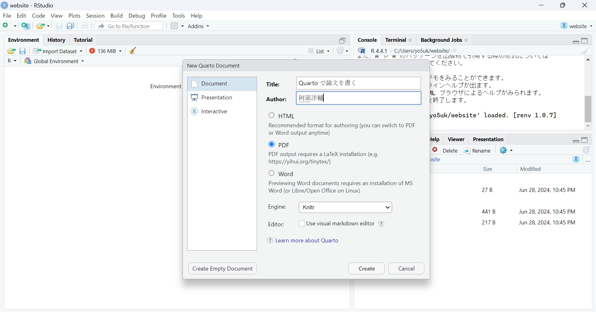

【PDF】Quarto で論文を書く
Quarto を使って論文を書く方法（テクニカル）をまとめました。
はじめに
これまでの記事で R Markdown や Quarto を使って \(\LaTeX\) 経由で PDF 出力する方法や、それらで使えるチャンクオプションについてご紹介してきました。
今回は、Quarto を使って論文を書く方法について包括的にまとめてみました。
ぜひ参考にしてみてください。
また、環境として RStudio を使用していると仮定します。
Quarto で論文を書く
Quarto は R Markdown の亜種、と考えてもらえればと思います。マークダウン形式で記述することができ、\(\LaTeX\) 記法を必ずしも用いる必要がないのが特徴です1。\(\LaTeX\) を深く学ばなくてもスタイリッシュな論文が書けるのではないでしょうか。
ここからは、書くのに最低限必要な使い方を紹介します。
プロジェクトの作成
必須ではありませんが推奨します。プロジェクトを作成することで、ファイルの管理がしやすくなります。
プロジェクトの作成については以下の記事で紹介しています。\(\LaTeX\) との差別化点として、分析結果をそのまま埋め込めることがあげられ、プロジェクトを作成することで、その恩恵を最大限受けられると考えています。
ファイルの作成
Quarto で論文を書くには、拡張子が .qmd のファイルを作成します。これは Quarto Markdown の略です。
RStudio 画面左上の ![]() をクリックし、「Quarto Document…」を選択します。
をクリックし、「Quarto Document…」を選択します。
以下のようにタイトルと著者名、PDF を選択し、Create をクリックします。“Use visual markdown editor” はオフにしてください2。

作成出来たら、 でファイルを任意の場所に保存します3。
でファイルを任意の場所に保存します3。
もし Quarto や R Markdown を使うのが初めての場合、上部に “Package rmarkdown required but not installed. Install Don’t show again” というメッセージが表示されるかもしれません。その場合、“Install” をクリックしてインストールしてください。
Global Options の設定
RStudio 上部のメニューから “Tools” > “Global Options…” を選択します。
その中の “Sweave” を選択し、“Typeset LaTeX into PDF using:” で “XeLaTeX” を選択します。また、その下にある “Use tinytex when compiling .tex files” にチェックを入れます。
最後に OK を押して閉じてください。
ヘッダーの記述
ファイルを作成すると、ドキュメントの上部に---で囲まれた部分があります。これを YAML ヘッダーと呼び、ここで文書の設定を行います。
以下は、最低限必要な設定です。
---
title: "【PDF】Quarto で論文を書く"
author: "阿部洋輔"
date: 2024-06-29 # 日付は適宜変更してください
format: pdf
execute:
echo: false # 論文内にコードを表示しない
---本文の書き方（ベーシック）
本文は Markdown で記述します。\(\LaTeX\) 記法を使うこともできますが、必ずしも使う必要はありません。もちろん、数式などは \(\LaTeX\) 記法を使うことができます。
以下のコードは、基本的な書き方の例です。
# 見出し1
## 見出し2
### 見出し3
本文です。セクションに応じて見出しをつけることができます。基本的には3段階までの見出しを使います。
- 箇条書き1
- 箇条書き2
- 箇条書き3
箇条書きを使うときは、ハイフンとスペースを入れてください。2段階目、3段階目を使用するときは、半角スペース4つを入れてください。
1. 番号付きリスト1
- 箇条書き
2. 番号付きリスト2
番号付きリストを使うときは、数字とピリオドとスペースを入れてください。
また、改行するときは空行を入れなければなりません。
文中で数式を使いたいときは、`$` で囲んでください。例えば、$y = ax + b$ のように記述します。
数式を別行で書きたいときは、`$$` で囲んでください。例えば、
$$
y = ax + b
$$ {#eq-equation-name}
のように記述します。数式にラベルをつけることもできます。`#eq-` の後にラベル名を記述します。
数式を引用するときは、`@eq-equation-name` のように記述します。以上が基本的な書き方です。
コードチャンクを使うときは、上記のように記述します。コードは YAML ヘッダーで execute: echo: false としているので、出力されません。結果は出力されます4。